狙い
マテリアルインフォマティクス（Materials informatics）は、大量のデータと高度な計算手法を用いて、材料設計と性質予測を行う比較的新しい分野です。この分野は、機械学習、データマイニング、統計学などのインフォマティクスの手法を、材料科学に応用することを目的としています。具体的には、データ駆動型の材料設計、材料データベースとデータマイニング、材料の性質とプロセスの予測モデリング、シミュレーションと実験データの統合などを対象としています。
論文タイトル一覧
トポロジカルデータ解析と機械学習を用いた非晶質材料の物性予測
この研究では、非晶質材料の原子配列と物性との関係を表現する特徴量として、持続ホモロジー（PH）を用いた。PHは、原子配列の幾何学的・位相的な特徴を抽出する数学的手法である。PHから得られる持続図（PD）を二次元ヒストグラムに変換し、リッジ回帰や畳み込みニューラルネットワーク（CNN）などの機械学習モデルに入力することで、非晶質カーボンの原子あたりの平均エネルギーを予測した。その結果、PHに基づく特徴量は、シンプルなモデルでも十分な精度で物性予測が可能であることが示された。また、次元削減による特徴量空間の可視化から、PHに基づく特徴量は、グラフニューラルネットワーク（GNN）によって生成される特徴量と類似した性質を持ち、従来の手作りの特徴量とは異なる構造情報を捉えていることが分かった。さらに、リッジ回帰の係数から、エネルギーが高い・低い局所構造を逆解析することで、PHに基づく特徴量が非晶質材料の中距離秩序や孔構造などのトポロジカルな特徴とエネルギーとの相関を効果的に抽出していることが確認された。
2023-08-22
Persistent homology-based descriptor for machine-learning potential of amorphous structures
Ming Jin, et al. (Monash University, Australia)
J. Chem. Phys. 159, 084101 (2023)
Persistent homology-based descriptor for machine-learning potential of amorphous structures
Ming Jin, et al. (Monash University, Australia)
J. Chem. Phys. 159, 084101 (2023)
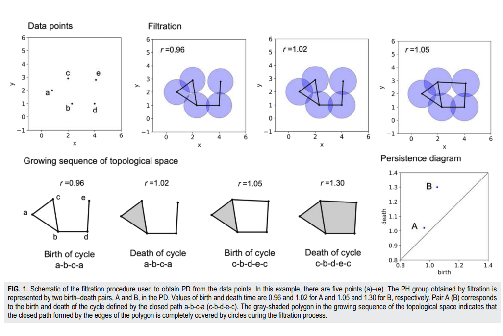
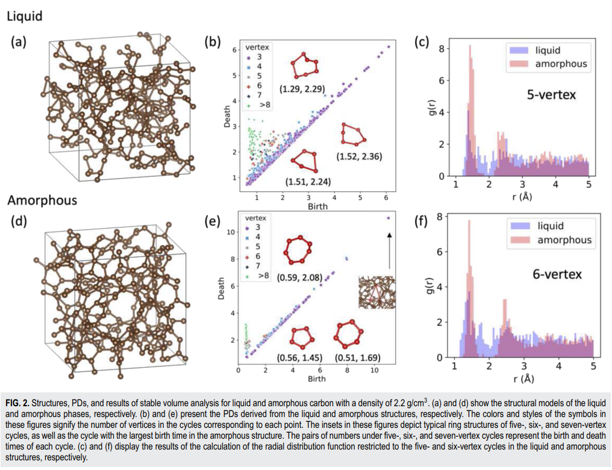
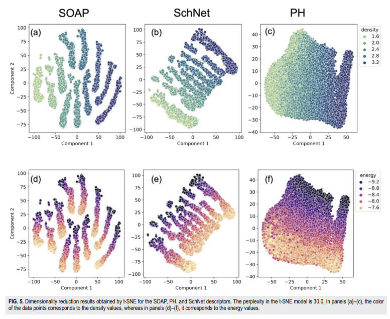
【コメント】
パーシステントホモロジーから抽出された特徴量はGNNからのそれと同様な傾向を示すというもの。説明可能性の観点から前者に軍配が上がりそう。
【用語】持続ホモロジー（PH）：データ点集合から位相的な特徴を抽出する数学的手法である。データ点に半径rの球を置き、rを増加させながら球同士が接触したり重なったりする様子を追跡することで、データ点集合に含まれる空洞や輪などの構造を記述する。これらの構造は、rの値に応じて現れたり消えたりするが、その寿命が長いものほどデータ点集合の本質的な特徴を表すと考えられる。このようにして得られる構造の出現時間（birth time）と消滅時間（death time）のペアを持続図（PD）という二次元図にプロットすることで、データ点集合の位相的な特徴を可視化することができる。 持続図（PD）：持続ホモロジーから得られる位相的な特徴を表す二次元図である。横軸に出現時間（birth time）、縦軸に消滅時間（death time）をとり、構造の寿命を示す点をプロットする。寿命が長い構造は、対角線から離れた位置に点が現れる。PDは、データ点集合の平行移動や回転、反射、同種原子の入れ替えなどに対して不変であるという性質を持つ。 グラフニューラルネットワーク（GNN）：グラフ構造のデータを扱うことができるニューラルネットワークの一種である。グラフは、頂点（ノード）と辺（エッジ）からなるデータ構造であり、原子配列や分子構造などを表現することができる。GNNは、各頂点に対して特徴ベクトルを割り当て、隣接する頂点や辺の情報を用いて特徴ベクトルを更新することで、グラフ全体の特徴を抽出する。GNNは、グラフのサイズや形状に依存せずに特徴ベクトルを生成することができるため、非晶質材料などの不規則な構造に対しても適用可能である。 リッジ回帰：線形回帰の一種であり、目的変数と説明変数の間の線形関係を求める手法である。ただし、説明変数の数が多い場合や多重共線性がある場合には、過学習や不安定な解が生じる可能性がある。そこで、リッジ回帰では、回帰係数の二乗和に正則化項（ペナルティ項）を加えて最小化することで、回帰係数の値が大きくなりすぎないように制約をかける。正則化項には正則化パラメータ（λ）が含まれており、λの値が大きいほど回帰係数は小さくなり、λの値が小さいほど回帰係数は大きくなる。
【提案手法】 この研究の提案手法は、非晶質材料の物性予測に持続ホモロジー（PH）を用いるというものです。持続ホモロジーとは、データ点集合から位相的な特徴を抽出する数学的手法で、原子配列の幾何学的・位相的な構造を記述することができます。この研究では、以下のような手順で物性予測を行っています。まず、非晶質カーボンの原子配列から持続ホモロジーを計算し、持続図（PD）という二次元図に変換します。持続図は、原子配列に含まれる空洞や輪などの構造の出現時間と消滅時間のペアをプロットしたもので、原子配列の位相的な特徴を可視化することができます。次に、持続図を二次元ヒストグラムに変換し、確率分布に正規化して特徴量とします。この特徴量は、空間的な対称操作や同種原子の入れ替えに対して不変であるという性質を持ちます。そして、この特徴量をリッジ回帰やCNNなどの機械学習モデルに入力し、非晶質カーボンの原子あたりの平均エネルギーを予測します。最後に、リッジ回帰の係数からエネルギーが高い・低い局所構造を逆解析し、その位相的・幾何学的な特徴を分析します。
【学術的新規性】 この提案手法の学術的な新規性は、非晶質材料の物性予測に持続ホモロジーを用いたことであり、これによりシンプルなモデルでも十分な精度で物性予測が可能であることが示されました。また、持続ホモロジーに基づく特徴量は、グラフニューラルネットワーク（GNN）によって生成される特徴量と類似した性質を持ち、従来の手作りの特徴量とは異なる構造情報を捉えていることが分かりました。さらに、持続ホモロジーに基づく特徴量が非晶質材料の中距離秩序や孔構造などのトポロジカルな特徴とエネルギーとの相関を効果的に抽出していることが確認されました。
【用語】持続ホモロジー（PH）：データ点集合から位相的な特徴を抽出する数学的手法である。データ点に半径rの球を置き、rを増加させながら球同士が接触したり重なったりする様子を追跡することで、データ点集合に含まれる空洞や輪などの構造を記述する。これらの構造は、rの値に応じて現れたり消えたりするが、その寿命が長いものほどデータ点集合の本質的な特徴を表すと考えられる。このようにして得られる構造の出現時間（birth time）と消滅時間（death time）のペアを持続図（PD）という二次元図にプロットすることで、データ点集合の位相的な特徴を可視化することができる。 持続図（PD）：持続ホモロジーから得られる位相的な特徴を表す二次元図である。横軸に出現時間（birth time）、縦軸に消滅時間（death time）をとり、構造の寿命を示す点をプロットする。寿命が長い構造は、対角線から離れた位置に点が現れる。PDは、データ点集合の平行移動や回転、反射、同種原子の入れ替えなどに対して不変であるという性質を持つ。 グラフニューラルネットワーク（GNN）：グラフ構造のデータを扱うことができるニューラルネットワークの一種である。グラフは、頂点（ノード）と辺（エッジ）からなるデータ構造であり、原子配列や分子構造などを表現することができる。GNNは、各頂点に対して特徴ベクトルを割り当て、隣接する頂点や辺の情報を用いて特徴ベクトルを更新することで、グラフ全体の特徴を抽出する。GNNは、グラフのサイズや形状に依存せずに特徴ベクトルを生成することができるため、非晶質材料などの不規則な構造に対しても適用可能である。 リッジ回帰：線形回帰の一種であり、目的変数と説明変数の間の線形関係を求める手法である。ただし、説明変数の数が多い場合や多重共線性がある場合には、過学習や不安定な解が生じる可能性がある。そこで、リッジ回帰では、回帰係数の二乗和に正則化項（ペナルティ項）を加えて最小化することで、回帰係数の値が大きくなりすぎないように制約をかける。正則化項には正則化パラメータ（λ）が含まれており、λの値が大きいほど回帰係数は小さくなり、λの値が小さいほど回帰係数は大きくなる。
【提案手法】 この研究の提案手法は、非晶質材料の物性予測に持続ホモロジー（PH）を用いるというものです。持続ホモロジーとは、データ点集合から位相的な特徴を抽出する数学的手法で、原子配列の幾何学的・位相的な構造を記述することができます。この研究では、以下のような手順で物性予測を行っています。まず、非晶質カーボンの原子配列から持続ホモロジーを計算し、持続図（PD）という二次元図に変換します。持続図は、原子配列に含まれる空洞や輪などの構造の出現時間と消滅時間のペアをプロットしたもので、原子配列の位相的な特徴を可視化することができます。次に、持続図を二次元ヒストグラムに変換し、確率分布に正規化して特徴量とします。この特徴量は、空間的な対称操作や同種原子の入れ替えに対して不変であるという性質を持ちます。そして、この特徴量をリッジ回帰やCNNなどの機械学習モデルに入力し、非晶質カーボンの原子あたりの平均エネルギーを予測します。最後に、リッジ回帰の係数からエネルギーが高い・低い局所構造を逆解析し、その位相的・幾何学的な特徴を分析します。
【学術的新規性】 この提案手法の学術的な新規性は、非晶質材料の物性予測に持続ホモロジーを用いたことであり、これによりシンプルなモデルでも十分な精度で物性予測が可能であることが示されました。また、持続ホモロジーに基づく特徴量は、グラフニューラルネットワーク（GNN）によって生成される特徴量と類似した性質を持ち、従来の手作りの特徴量とは異なる構造情報を捉えていることが分かりました。さらに、持続ホモロジーに基づく特徴量が非晶質材料の中距離秩序や孔構造などのトポロジカルな特徴とエネルギーとの相関を効果的に抽出していることが確認されました。
密度汎関数理論を模倣する深層学習フレームワーク
深層ニューラルネットワークを用いて、原子構造から電子電荷密度を予測し、その後、電荷密度と原子構造を入力として、他の物性（電子状態、ポテンシャルエネルギー、原子力、応力テンソルなど）を予測するという、密度汎関数理論（DFT）の本質に沿った二段階の学習手法を提案した。電荷密度の記述子として、ガウス型軌道（GTO）を用いたが、事前に定義された基底関数は使用せず、モデルがデータから最適な基底関数を学習することで、モデルの柔軟性と汎化性を高めた。C, H, N, Oからなる有機分子、高分子鎖、高分子結晶の広い化学空間に対して、DFTの結果と非常に高い精度で電荷密度や物性を再現できることを示した。DFTに比べて、計算コストが桁違いに低く、系サイズに対して線形的なスケーリングを示すことを確認した。本手法はDFTの完全なエミュレーターとして機能し、材料の探索や最適化、分子動力学シミュレーションなどに応用できる可能性がある。
Published 2023-08-29
A deep learning framework to emulate density functional theory
Beatriz G. del Rio, et al. (Georgia Institute of Technology, USA)
npj Computational Materials 9, 158 (2023)
A deep learning framework to emulate density functional theory
Beatriz G. del Rio, et al. (Georgia Institute of Technology, USA)
npj Computational Materials 9, 158 (2023)
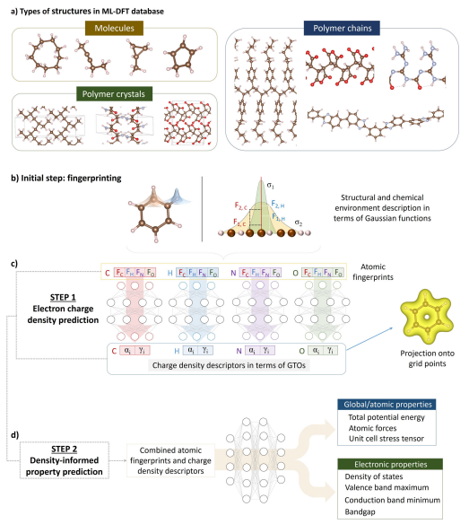
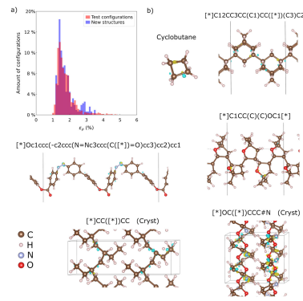
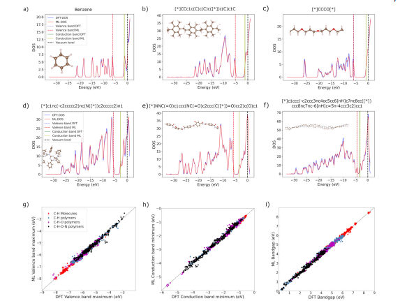
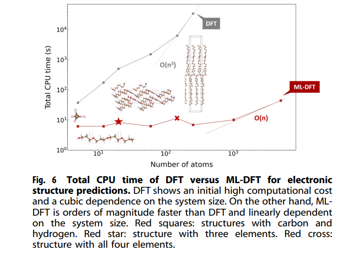
【コメント】最安定構造を見つけ出すというもの。計算がものすごく早いみたいなので、準安定構造探索への拡張も期待。
【用語】密度汎関数理論（DFT）：量子力学に基づいて多体系の電子構造や物性を計算する理論である。多電子問題を効果的に一電子問題に変換することで、コーン・シャム方程式と呼ばれる方程式を解くことで、系の電荷密度やエネルギー固有値（または電子状態）を求めることができる。これらの量からさまざまな物性（ポテンシャルエネルギー、原子力、応力テンソルなど）を計算することができる。DFTは材料科学や化学などの分野で広く用いられているが、計算コストが高く、大規模な系や長時間の動的現象に対しては適用が困難である。 ガウス型軌道（GTO）：原子軌道や分子軌道などの波動関数を近似するために用いられる基底関数の一種である。ガウス関数の形をした軌道で、指数や係数を変えることでさまざまな形の電荷密度を表現することができる。GTOは計算が容易であるという利点があるが、原子核付近の電荷密度を正確に再現するためには多くの基底関数が必要になるという欠点もある。 深層学習（deep learning）：機械学習の一分野であり、多層のニューラルネットワークを用いて、データから複雑な特徴やパターンを抽出し、予測や分類などのタスクを行う手法である。深層学習は画像認識や自然言語処理などの分野で高い性能を発揮しており、近年では材料科学や化学などにも応用されている。 【提案手法】本研究では、DFTのエミュレーターとして機能する深層学習フレームワークを構築した。その手順は以下の通りである。まず、DFT-MDシミュレーションを用いて、C, H, N, Oからなる有機分子、高分子鎖、高分子結晶のデータベースを作成した。各構造に対して、電荷密度や物性（電子状態、ポテンシャルエネルギー、原子力、応力テンソルなど）をDFTで計算した。次に、各原子の構造的・化学的環境を記述するために、AGNI原子指紋と呼ばれる特徴量を計算した。これらの指紋はスカラー、ベクトル、テンソルのような表現からなり、平行移動や回転に対して不変である。そして、AGNI原子指紋を入力として、電荷密度モデルと呼ばれる深層ニューラルネットワークを用いて、各原子の電荷密度をGTOで展開したときの係数と指数を予測した。このとき、事前に定義された基底関数は使用せず、モデルがデータから最適な基底関数を学習するようにした。予測されたGTOの係数と指数は各原子の内部座標系で表されるため、グリッド点上に投影する前にカルテシアン座標系に変換する必要がある。そのためには、各原子の最近接原子2つから内部座標系の基底ベクトルを定義し、変換行列を作成した。最後に、AGNI原子指紋と電荷密度記述子を組み合わせて入力として、機械学習モデルにより他の物性を予測する。AGNI原子指紋は原子の局所的な環境を表す特徴量で、電荷密度記述子は分子の電子分布を表した。これらの特徴量は第一原理計算から得られるため、経験的なパラメータや仮定が不要となる。
【学術的新規性】AGNI原子指紋と電荷密度記述子を組み合わせることで、分子の構造と電子状態の両方を考慮した物性予測が可能になった点。これは、従来の機械学習モデルでは取り入れられていなかった重要な情報となる。また、この手法は分子の種類やサイズに依存しないため、汎用性が高く、多様な物質に適用できる点。
【用語】密度汎関数理論（DFT）：量子力学に基づいて多体系の電子構造や物性を計算する理論である。多電子問題を効果的に一電子問題に変換することで、コーン・シャム方程式と呼ばれる方程式を解くことで、系の電荷密度やエネルギー固有値（または電子状態）を求めることができる。これらの量からさまざまな物性（ポテンシャルエネルギー、原子力、応力テンソルなど）を計算することができる。DFTは材料科学や化学などの分野で広く用いられているが、計算コストが高く、大規模な系や長時間の動的現象に対しては適用が困難である。 ガウス型軌道（GTO）：原子軌道や分子軌道などの波動関数を近似するために用いられる基底関数の一種である。ガウス関数の形をした軌道で、指数や係数を変えることでさまざまな形の電荷密度を表現することができる。GTOは計算が容易であるという利点があるが、原子核付近の電荷密度を正確に再現するためには多くの基底関数が必要になるという欠点もある。 深層学習（deep learning）：機械学習の一分野であり、多層のニューラルネットワークを用いて、データから複雑な特徴やパターンを抽出し、予測や分類などのタスクを行う手法である。深層学習は画像認識や自然言語処理などの分野で高い性能を発揮しており、近年では材料科学や化学などにも応用されている。 【提案手法】本研究では、DFTのエミュレーターとして機能する深層学習フレームワークを構築した。その手順は以下の通りである。まず、DFT-MDシミュレーションを用いて、C, H, N, Oからなる有機分子、高分子鎖、高分子結晶のデータベースを作成した。各構造に対して、電荷密度や物性（電子状態、ポテンシャルエネルギー、原子力、応力テンソルなど）をDFTで計算した。次に、各原子の構造的・化学的環境を記述するために、AGNI原子指紋と呼ばれる特徴量を計算した。これらの指紋はスカラー、ベクトル、テンソルのような表現からなり、平行移動や回転に対して不変である。そして、AGNI原子指紋を入力として、電荷密度モデルと呼ばれる深層ニューラルネットワークを用いて、各原子の電荷密度をGTOで展開したときの係数と指数を予測した。このとき、事前に定義された基底関数は使用せず、モデルがデータから最適な基底関数を学習するようにした。予測されたGTOの係数と指数は各原子の内部座標系で表されるため、グリッド点上に投影する前にカルテシアン座標系に変換する必要がある。そのためには、各原子の最近接原子2つから内部座標系の基底ベクトルを定義し、変換行列を作成した。最後に、AGNI原子指紋と電荷密度記述子を組み合わせて入力として、機械学習モデルにより他の物性を予測する。AGNI原子指紋は原子の局所的な環境を表す特徴量で、電荷密度記述子は分子の電子分布を表した。これらの特徴量は第一原理計算から得られるため、経験的なパラメータや仮定が不要となる。
【学術的新規性】AGNI原子指紋と電荷密度記述子を組み合わせることで、分子の構造と電子状態の両方を考慮した物性予測が可能になった点。これは、従来の機械学習モデルでは取り入れられていなかった重要な情報となる。また、この手法は分子の種類やサイズに依存しないため、汎用性が高く、多様な物質に適用できる点。
結晶合金の可調整な物性を計算的にスクリーニングする方法
既存の材料データベースから、結晶構造が類似している化合物の組み合わせを自動的に探索し、可能な合金や固溶体を提案するフレームワークとオープンソースコードを開発した。Materials Projectデータベースにこのフレームワークを適用し、60万以上のユニークな「合金ペア」や1万以上の「合金系」を作成し、公開した。これらのデータは、物性の可調整性を探索するために利用できる。合金ペアや合金系の可視化や分析のために、新しい手法を提案した。例えば、半空間ハル法を用いて、合金の熱力学的安定性や相変化を推定したり、格子定数やバンドギャップなどの物性をプロットしたりした。このフレームワークを応用して、p型透明導電体として有望な合金候補をスクリーニングした。その結果、従来の化合物スクリーニングでは見逃されていた可能性のある新しい候補を発見した。
コメント：学部生の時にp型透明超伝導体の探索研究をしていたが、このようなデータベースでの予測を基に、材料研究が出来ていたらもっと深く研究できたのではないかと思う。
10 Apr 2023 (v3), 21 Jun 2022 (v1)
A method to computationally screen for tunable properties of crystalline alloys
Rachel Woods-Robinson et al. (University of California at Berkeley, USA)
arXiv:2206.10715 (cond-mat.mtrl-sci)
A method to computationally screen for tunable properties of crystalline alloys
Rachel Woods-Robinson et al. (University of California at Berkeley, USA)
arXiv:2206.10715 (cond-mat.mtrl-sci)
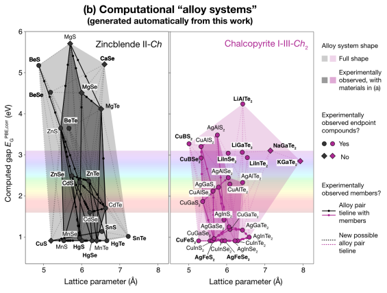
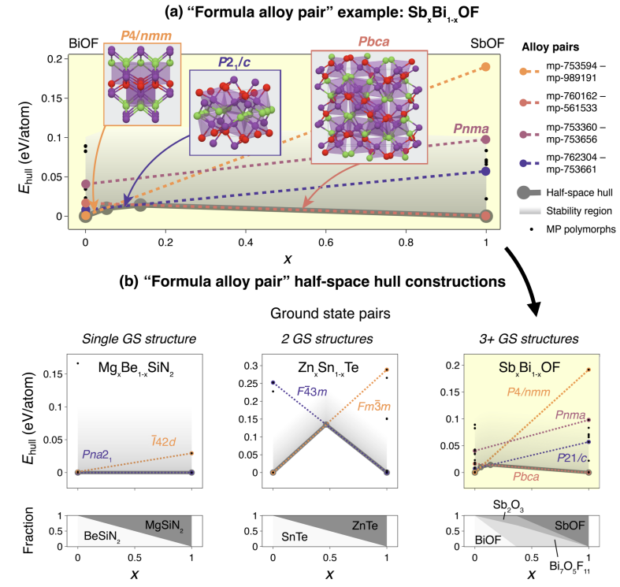
GPT-4を用いた化学研究の可能性と限界
この文書は、GPT-4という大規模な言語モデルが化学研究にどのように応用できるかを検証したものであり、有機化学、化学情報学、数学、物理化学などの分野において、一般的な教科書レベルの知識を持っていることが示された。GPT-4は、少量のデータから新しい知識を学習し、推論問題や説明変数の選択、沸点や多変数関数の探索などのタスクに対処できることが示された。特に、分子構造や実験データなどの非言語データの扱いに課題があり、専門的な内容や最新の情報に対応できない場合があることが示された。
コメント：GPTを用いた科学研究の有用性と限界の一例を見れて大変参考になった。非言語データの扱いへの対応の向上により、GPT-4を用いた自動化実験技術の普及にも期待したい。
関連記事：Zhichu Ren et al., Nature Reviews Materials (2023)：AIとアクティブラーニングを用いた自律実験の課題と展望
関連記事：Zhichu Ren et al., Nature Reviews Materials (2023)：AIとアクティブラーニングを用いた自律実験の課題と展望
5 Jun 2023
Prompt engineering of GPT-4 for chemical research: what can/cannot be done?
Kan Hatakeyama-Sato et al. (Tokyo Institute of Technology, Japan)
10.26434/chemrxiv-2023-s1x5p
Prompt engineering of GPT-4 for chemical research: what can/cannot be done?
Kan Hatakeyama-Sato et al. (Tokyo Institute of Technology, Japan)
10.26434/chemrxiv-2023-s1x5p
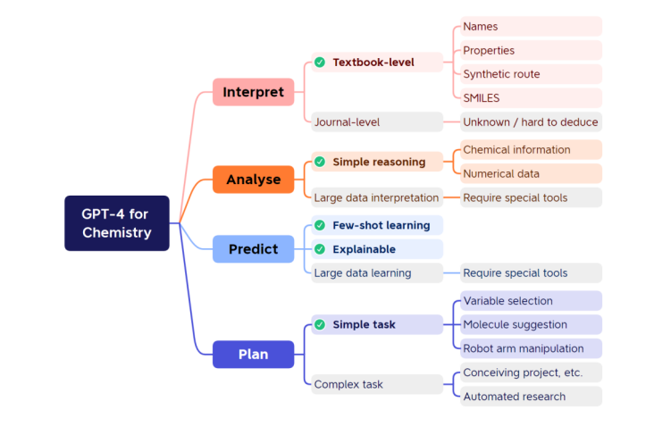
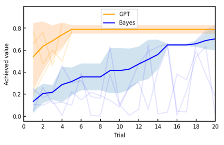
化学ツールを組み込んだ大規模言語モデル：ChemCrow
大規模言語モデル（LLM）と化学分野の専門的なツールを統合することで、有機合成、薬物発見、材料設計などの化学関連のタスクを自動的に解決することができる化学エージェント（ChemCrow）を開発した。ChemCrowは、LLMに与えられたタスクとツールのリストから、思考・行動・観察の形式で自律的な推論プロセスを展開し、最終的な回答に到達する。ツールは、LLMが化学的に正確かつ効率的な情報を得るために必要な場合に呼び出される。特に、GPT-4という最新のLLMを用いて、さまざまな難易度の14個のタスクに対して評価された。専門家による評価では、ChemCrowはGPT-4よりも化学的な正確さ、推論の質、タスクの完了度において優れていることが示された。特に複雑なタスクでは、ChemCrowはGPT-4が苦手とする化学的な知識や理解をツールを通して補うことができた。ChemCrowの開発と利用には、二重使用や安全性や倫理性などの潜在的なリスクが伴うことを認識し、それらを軽減するための戦略を提案した。例えば、危険な物質や反応に対しては警告やエラーを出すツールを組み込んだり、人間のフィードバックやレビューを求めたりすることである。
コメント：GPT-4を用いた最近注目される材料設計ツール。人間言語と機械言語を繋ぐ材料設計の実現に期待。マテリアルズインフォマティクスは有機よりも無機の方が進んでいる理解であったが、言語モデルを利用したツールは有機からスタートするのは少し驚き。
21 Jun 2023 (v4), 11 Apr 2023 (v1)
Augmenting large language models with chemistry tools
Andres M. Bran et al. (Laboratory of Artificial Chemical Intelligence (LIAC), ISIC, EPFL, Switzerland)
arXiv:2304.05376 (chem-ph)
Augmenting large language models with chemistry tools
Andres M. Bran et al. (Laboratory of Artificial Chemical Intelligence (LIAC), ISIC, EPFL, Switzerland)
arXiv:2304.05376 (chem-ph)
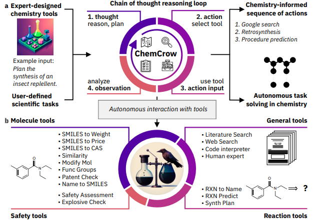
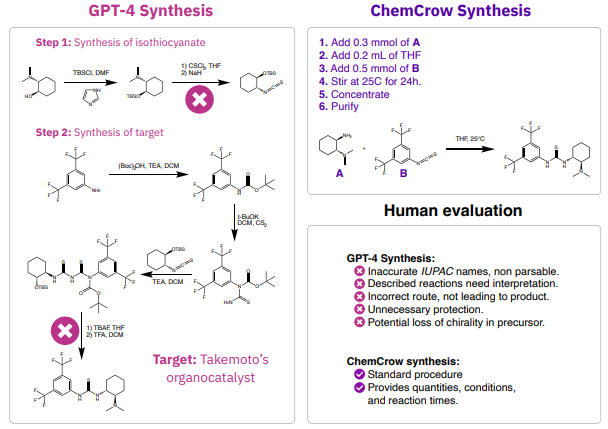
耐食合金設計のための機械学習戦略
耐食合金のピッティング電位を予測するために、合金の組成、加工履歴、電気化学試験方法などの数値的・文書的な入力を同時に受け付けることができる「プロセス意識的DNNモデル」を開発した。プロセス意識的DNNモデルは、単純なDNNモデルよりも予測精度が高く、MoやCuなどの合金元素のピッティング抵抗への寄与をより正確に把握できた。自然言語処理に基づくプロセス意識的DNNモデルでは、文書データ内の重要なキーワードやフレーズを特定するために、カスタマイズされた入力摂動法を用いた。合金の組成を原子半径、電気陰性度、原子パッキング効率、配置エントロピーなどの物理化学的な特徴量に変換して入力する「特徴変換DNNモデル」も開発した。特徴変換DNNモデルは、機械学習モデルに因果的な背景を与えることができ、訓練データに存在しない元素を含む新しい合金に対しても予測が可能であることを示した。
コメント：GPT-4を用いた最近注目される材料設計ツール。人間言語と機械言語を繋ぐ材料設計の実現に期待。マテリアルズインフォマティクスは有機よりも無機の方が進んでいる理解であったが、言語モデルを利用したツールは有機からスタートするのは少し驚き。
【補足】ピッティング電位：ピッティングと呼ばれる局部的な腐食が発生する最小の電位のこと。ピッティング電位は、合金の組成や微細構造、試験溶液のpHや塩化物イオン濃度などによって影響を受ける。ピッティング電位が高いほど、合金はピッティングに対して抵抗性が高いと言える。 【手法論】本研究では、二つの異なる深層学習モデルを用いて、耐食合金のピッティング電位を予測することを目的とした。一つ目のモデルは、プロセス意識的DNNモデルと呼ばれ、合金の組成や加工履歴、電気化学試験方法などの数値的・文書的な入力を同時に受け付けることができる。このモデルでは、文書データを単語に分割し、単語を数値ベクトルに変換し、順序を考慮して再帰型ニューラルネットワーク（RNN）に入力するという自然言語処理の手法を用いた。RNNの出力と数値データを結合して、全結合層からなるDNNに入力し、最終的にピッティング電位を出力した。このモデルは、文書データに含まれる重要な情報を捉えることができ、単純なDNNモデルよりも予測精度が高かった。また、文書データ内のキーワードやフレーズの重要度を分析するために、入力摂動法という手法を用いた。この手法では、文書データを単語ごとに追加していき、予測値がどのように変化するかを観察することで、重要度を評価した。
二つ目のモデルは、特徴変換DNNモデルと呼ばれ、合金の組成を原子半径や電気陰性度などの物理化学的な特徴量に変換して入力した。このモデルでは、特徴量の選択や変換にmatminerというオープンソースのPythonライブラリを用いた。特徴変換後の入力データは、全結合層からなるDNNに入力し、最終的にピッティング電位を出力した。このモデルは、プロセス意識的DNNモデルよりも予測精度は低かったが、特徴量の最適化によって耐食合金のメカニズムに関する洞察が得られた。また、このモデルは、訓練データに存在しない元素を含む新しい合金に対しても予測が可能であることを示した。
【補足】ピッティング電位：ピッティングと呼ばれる局部的な腐食が発生する最小の電位のこと。ピッティング電位は、合金の組成や微細構造、試験溶液のpHや塩化物イオン濃度などによって影響を受ける。ピッティング電位が高いほど、合金はピッティングに対して抵抗性が高いと言える。 【手法論】本研究では、二つの異なる深層学習モデルを用いて、耐食合金のピッティング電位を予測することを目的とした。一つ目のモデルは、プロセス意識的DNNモデルと呼ばれ、合金の組成や加工履歴、電気化学試験方法などの数値的・文書的な入力を同時に受け付けることができる。このモデルでは、文書データを単語に分割し、単語を数値ベクトルに変換し、順序を考慮して再帰型ニューラルネットワーク（RNN）に入力するという自然言語処理の手法を用いた。RNNの出力と数値データを結合して、全結合層からなるDNNに入力し、最終的にピッティング電位を出力した。このモデルは、文書データに含まれる重要な情報を捉えることができ、単純なDNNモデルよりも予測精度が高かった。また、文書データ内のキーワードやフレーズの重要度を分析するために、入力摂動法という手法を用いた。この手法では、文書データを単語ごとに追加していき、予測値がどのように変化するかを観察することで、重要度を評価した。
二つ目のモデルは、特徴変換DNNモデルと呼ばれ、合金の組成を原子半径や電気陰性度などの物理化学的な特徴量に変換して入力した。このモデルでは、特徴量の選択や変換にmatminerというオープンソースのPythonライブラリを用いた。特徴変換後の入力データは、全結合層からなるDNNに入力し、最終的にピッティング電位を出力した。このモデルは、プロセス意識的DNNモデルよりも予測精度は低かったが、特徴量の最適化によって耐食合金のメカニズムに関する洞察が得られた。また、このモデルは、訓練データに存在しない元素を含む新しい合金に対しても予測が可能であることを示した。
11 Aug 2023
Enhancing corrosion-resistant alloy design through natural language processing and deep learning
Kasturi Narasimha Sasidhar et al. (Max-Planck-Institut für Eisenforschung GmbH, Germany)
SCIENCE ADVANCES, Vol 9, Issue 32
Enhancing corrosion-resistant alloy design through natural language processing and deep learning
Kasturi Narasimha Sasidhar et al. (Max-Planck-Institut für Eisenforschung GmbH, Germany)
SCIENCE ADVANCES, Vol 9, Issue 32
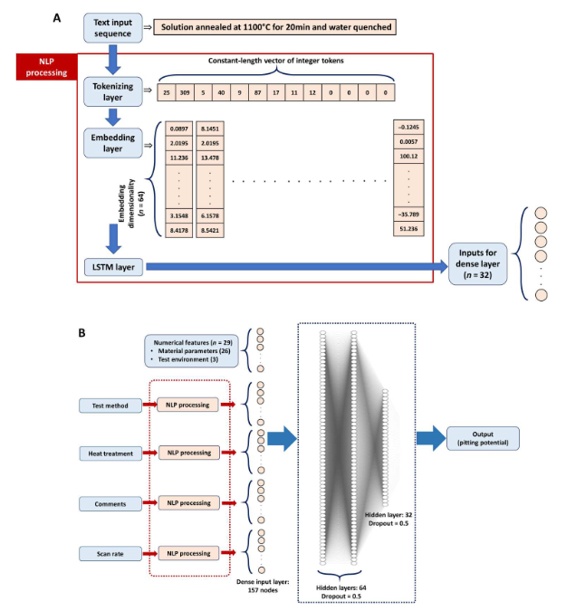
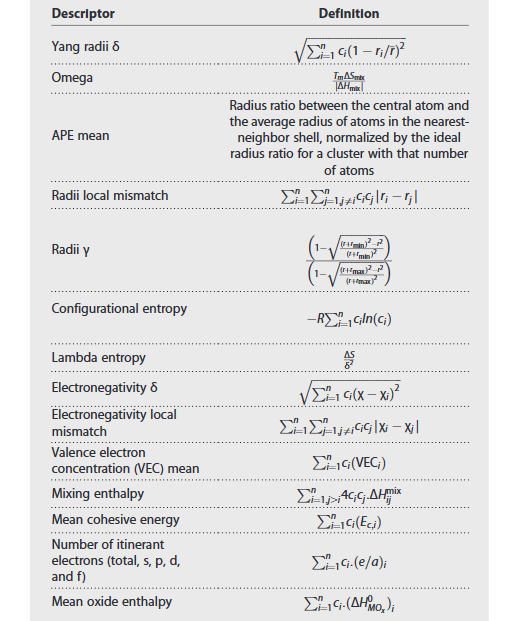
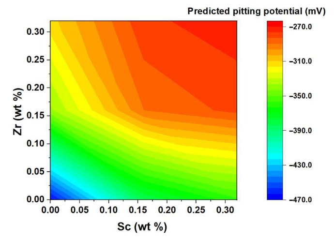